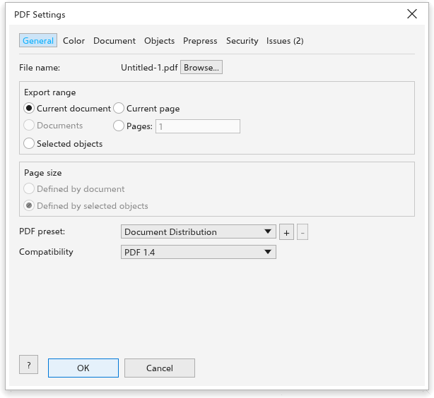
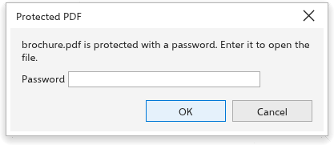

Publishing to PDF
File > Publish to PDF (also on the standard toolbar) writes a PDF file with full control of what goes in: which pages, which PDF standard, how pictures are compressed, document information, bookmarks, printers' marks and password protection. The tabs are General, Color, Document, Objects, Prepress, Security and the issues tab.

General
- File name, with Browse to choose another place.
- Export range: the current document (every page), every open document, the current page, a list of pages (such as
1-3, 5), or the selection. - Page size for a selection: Defined by document (the page, with only the selected objects) or Defined by selected objects (a page the size of the selected objects, the default).
- PDF preset: Document Distribution, Web, Prepress (PDF/X-4), PDF/X-1a, PDF/X-3, or your own; + saves the current settings as a preset under a name you type (the same name replaces it) and - deletes the chosen one. A preset sets the compatibility, the output condition, the flattening resolution, the bookmarks, the bleed, the printers' marks and the bitmap choices.
- Compatibility: PDF 1.4, PDF/X-1a:2003, PDF/X-3:2003 or PDF/X-4. PDF/X files are made for print shops.
Color
For PDF/X, the output condition (FOGRA39 at first); the CMYK profile of the drawing goes into the file. A plain PDF keeps the colors as they are.
Document
Title, Author, Subject and Keywords, filled in from the drawing's properties; a bookmark for each page (on at first) and show the bookmarks when the file opens.
Objects
- Flatten transparency at a resolution (300 dpi), for PDF/X-1a and X-3, which do not allow transparency. The other standards keep transparency live, so the field is greyed for them.
Bitmaps
The Bitmaps group sets how pictures go into the file. The choices are kept for the next time and in the presets.
- Downsample colour images to (off, 300 dpi): a colour picture with more pixels than this resolution, as it is placed on the page, is made smaller to that resolution.
- Downsample gray images to (off, 300 dpi): the same for pictures that are only grays. Gray pictures always go in with one channel, which keeps them small.
- Downsample black-and-white images to (off, 1200 dpi): the same for pictures of only black and white pixels.
- Compression: ZIP (lossless) (the default) keeps every pixel; JPEG makes smaller files with some loss, at the Quality you set (1 to 100, 85 at first). Black-and-white pictures, transparency masks and PDF/X-1a files always use ZIP.
- Compress text and line art (on) compresses the pages' text and drawing.
A picture that lies wholly outside the page and its bleed cannot show, so it is left out of the file.
The Web preset downsamples colour and gray pictures to 150 dpi and black-and-white ones to 300 dpi, with JPEG at quality 75.
Prepress
- Bleed (0 to 50 mm, the drawing's bleed at first) around every page: the trim box is the page, the media box the page and the bleed.
- Printers' marks: Crop marks, Registration marks, Color bars and File information around every page. See Printers' marks in PDF files.
Text and fonts
Text goes into the PDF as real text: in a PDF viewer you can search it, select it and copy it, and it keeps its fill, outline, colors and angle. The fonts go into the file as well, so the text looks the same on any computer. In the Text and fonts group of the Objects tab:
- Export all text as curves (off at first) writes every text as curves instead: the file has no fonts and its text cannot be searched. The curves follow the letters' own outlines exactly, so they stay smooth at any zoom.
- Embed fonts in document (on at first) puts the fonts in the file. Turned off, the fonts are only named and the viewer uses its own copy.
- Embed base 14 fonts also puts Helvetica, Times and Courier in the file; otherwise the viewer's standard fonts draw them.
- Subset fonts puts in only the letters the file uses, which keeps it small, when a font uses less than the share you set (80 %).
PDF/X files always carry their fonts. Some fonts do not allow being put in other files: their text is written as curves, the status bar names them after publishing, and the preflight lists such text beforehand.
Security
- Require a password to open the file, and the password.
- Restrict printing, copying and changes with a password, and the password, then the permissions: printing (not allowed, low resolution only, allowed), copying, changing the content, adding comments, filling in forms, managing pages and text access for screen readers.
- Show passwords.
PDF/X files cannot be protected. The passwords are never kept.
Issues
The last tab lists what the preflight check finds; see Preflight. Click OK to write the file. If something is missing, such as a password or a page in the list, the dialog box says so in red.
Opening protected PDF files
When you open or import a PDF that needs a password, the Protected PDF dialog box asks for it. Type the Password and click OK. A wrong password is refused and you can try again; Cancel leaves the file closed.
